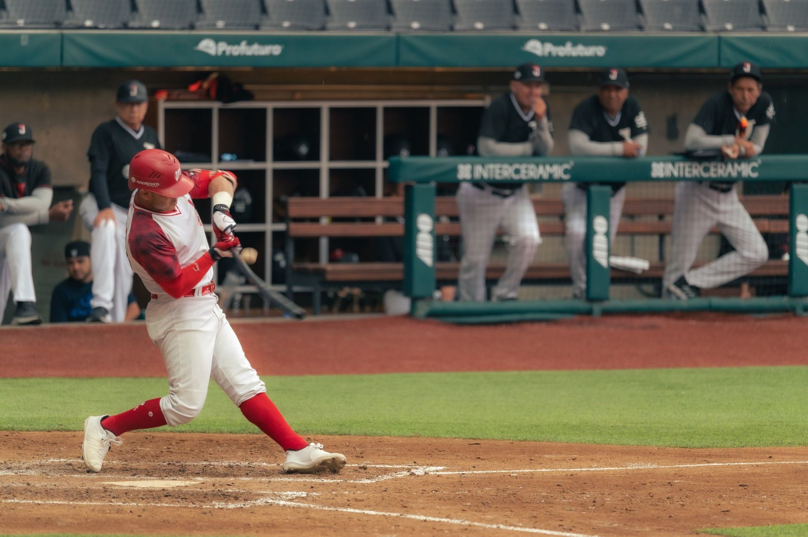

Contreras provides the biggest swing of the game
Willson Contreras changed the feel of the game with one powerful swing. His home run immediately drew attention because of its height, distance and the way it left the ballpark with authority. In a matchup where every run mattered, the blast gave his side an important offensive lift and became the moment most fans remembered.
The headline’s playful question about when the ball will land captures the visual impact of the hit. It was not simply a routine home run that cleared the wall by a few feet. Contreras drove the ball with enough force to make the play feel larger than an ordinary scoring opportunity, giving the game an early highlight that spread quickly among baseball supporters.
Why the home run mattered against Boston
Power hitting can change a baseball game even when it comes from only one plate appearance. Contreras’ blast forced the opposing pitching staff to respect the middle of the order and created a more difficult path through the lineup. After a home run like that, pitchers have less room to challenge hitters over the plate, especially with runners on base or dangerous batters waiting behind them.
The Red Sox-Giants matchup also showed how individual moments fit into a larger team result. A home run can provide momentum, but the winning club still needs quality at-bats, dependable defense and effective work from its pitchers. Contreras supplied the loudest offensive contribution, while the game itself was decided by how both teams handled the remaining innings.
The numbers behind a towering blast
Modern baseball gives fans more ways to understand a home run than the traditional box score. Statcast can record exit velocity, launch angle, projected distance and the estimated probability that a similarly hit ball would leave the park. Those figures help explain why some home runs look spectacular even when they travel a different distance from one stadium to another.
What the swing says about Contreras
Contreras has long been known for combining strength with an aggressive approach at the plate. His ability to punish a mistake makes him a difficult hitter to navigate, particularly when he gets a pitch in a location he can drive. The home run against the Giants underlined that threat and showed why one well-timed swing can change the rhythm of a game.
One powerful swing can turn a close baseball game into a moment fans remember long after the final out.
A bigger week of baseball stories
The Contreras blast is part of what makes the MLB season so compelling. Games are shaped by long-term trends, but individual highlights give each night its own identity. A towering home run, a late defensive play or a dominant pitching performance can become the story that travels far beyond the stadium and keeps fans talking.
For readers following major baseball milestones, our related coverage also looks at Jacob deGrom Reaches 2,000 Strikeouts in Rangers Win. That story offers a different kind of achievement, highlighting pitching longevity and dominance instead of one explosive swing. Together, the two moments show the range of performances that can define an MLB news cycle.
See Also
If you enjoyed this Baseball News article, check out Jacob deGrom Reaches 2,000 Strikeouts in Rangers Win for more useful reading.